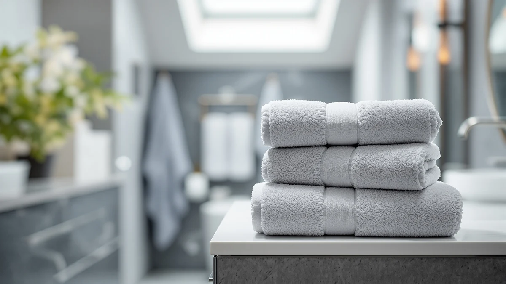

Bath Towels vs Target: Which Is Better? (2026)
Prices and picks verified as of October 2026. Independent, reader-supported reviews.


Things to Know Before You Buy
- Specialty towel brands disclose GSM weight and cotton type; Target mostly doesn't. Listings for American Soft Linen and Cotton Paradise state 600 GSM Turkish cotton outright, while Target's Threshold and Casaluna product pages rarely mention a weight figure at all.
- Target's entry-level towels usually cost less upfront. Threshold towels often sell in the $8 to $15 per-towel range, undercutting most specialty sets before you factor in what that lower price gets you in cotton grade.
- Specialty sets bundle matched pieces; Target sells more mix-and-match. A set like the Utopia Towels 8 Piece Luxury pairs 2 bath towels, 2 hand towels, and 4 washcloths from one dye lot, while Target shoppers often combine separate purchases over time.
- Target lets you inspect the towel before buying; online brands rely on reviews and photos. That in-store check matters if texture and color accuracy are a priority.
- Returns favor Target for in-person swaps, and favor Amazon-sold brands for price history and verified owner reviews. Each platform gives you a different kind of confidence before you commit.
Bath towels vs Target is the question every budget shopper eventually asks while standing in a linen aisle: buy from a dedicated towel brand online, or grab whatever Target has stocked under its own label that week? Target's Threshold and Casaluna towels sit on shelves in nearly every store and ship with a target.com order, while brands like White Classic, American Soft Linen, and Utopia sell almost entirely through Amazon and their own sites.
We compared the two paths across construction, price, and daily use, weighing Target's house lines against Amazon-sold sets such as the Luxury White Bath Towel Set and American Soft Linen Luxury 6. Dedicated brands publish exact GSM weight and cotton type on nearly every listing, while Target's labels mostly skip that detail and let the price tag do the talking. Neither side fits every bathroom, and the right call depends on how much you care about documented specs versus a quick, same-day purchase.
Quick Answer
For a bath towel that survives years of hot washes, a dedicated brand like White Classic or American Soft Linen beats Target's house lines on stated GSM weight and cotton grade, usually at a similar or lower price once you compare full sets. Target wins when you need towels today without researching specs online, since Threshold and Casaluna sets sit on shelves in nearly every store at a lower entry price. In the bath towels vs Target matchup, buy specialty when documented durability matters most, buy Target when convenience does.
What is Bath Towels?
In this bath towels vs Target comparison, "bath towels" refers to the sets sold by dedicated linen brands rather than general retailers, companies that make towels and little else. White Classic, American Soft Linen, Utopia Towels, Cotton Paradise, NALIVO, and Tens Towels all fall into this group, and each sells primarily through Amazon rather than brick-and-mortar stores. Because towels are the entire product line, these brands compete on details that general retailers often skip: GSM weight, cotton origin, and certification.
Several of the sets in this comparison state a 600 GSM weight and Turkish or ring-spun cotton construction right in the listing title, and brands like American Soft Linen and Cotton Paradise carry OEKO-TEX Standard 100 certification, confirming the fabric has been compared for harmful substances. Sets typically bundle matched pieces, such as the Utopia Towels 8 Piece Luxury with 2 bath towels, 2 hand towels, and 4 washcloths from one dye lot and one weave.
Buying this way means ordering sight-unseen and waiting on shipping, trading the in-store check you get at Target for a documented spec sheet and a large pool of verified owner reviews to read before you commit.
What is Target?
Target is the general merchandise retailer, and its bath towels live inside house labels like Threshold and Casaluna rather than under a dedicated linen brand name. Towels are one category among thousands Target stocks, sold in nearly every physical store location and on target.com, and the lineup rotates by season and by collection rather than staying fixed the way a specialty brand's catalog does.
Because Target sells across so many categories, its towel listings tend to lead with color, pattern, and price rather than cotton grade. GSM weight rarely appears on the packaging or the product page, and the specific cotton source is often described only as "cotton" without the Turkish or ring-spun detail that specialty brands highlight. Target's Casaluna line sits at a higher price point than Threshold and generally uses heavier, more absorbent cotton, narrowing the gap with specialty sets somewhat.
What Target offers instead is immediacy: you can walk into a store, feel the actual towel, and walk out with it the same day, plus an easy in-store return if the set disappoints after a few washes.
Head-to-Head: Build Quality & Durability
Specialty brands win this round on documentation, if not always on raw performance. American Soft Linen and Cotton Paradise both list 600 GSM Turkish cotton, a weight that holds up to repeated hot washes without thinning quickly, and OEKO-TEX certification on several sets confirms the fabric passed testing for harmful residues. White Classic's Hotel Collection set follows the same pattern: 100% Turkish cotton, reinforced construction, built for the kind of daily use a shared bathroom puts a towel through.
Target's house lines are harder to pin down because they aren't static. Threshold towels, the entry tier, tend to run lighter and thinner than the specialty sets in this comparison, and owners report more thinning after a year or two of regular washing. Casaluna, Target's step-up line, uses noticeably heavier cotton and narrows that durability gap, though Target still doesn't publish a GSM number you can compare directly against a listing like American Soft Linen's.
The pattern across this bath towels vs Target matchup holds: when a brand's whole business is towels, it tends to compete on construction specs. When towels are one category inside a much bigger store, the construction details get less attention unless you pay up for the premium tier.
Head-to-Head: Price & Value
Target's Threshold tier usually undercuts specialty brands on sticker price, with individual bath towels commonly running $8 to $15. That price reflects what you're not getting: a stated cotton grade or certification. Once you move up to Casaluna or compare full sets, the gap narrows fast. The Utopia Towels 8 Piece Luxury costs $29.99 for 2 bath towels, 2 hand towels, and 4 washcloths with a documented cotton construction, landing close to what a Casaluna set costs for similar coverage.
American Soft Linen's $39.99 six-piece set and White Classic's $39.99 eight-piece set cost more upfront than Target's cheapest towels, but both specify 600 GSM or Turkish cotton weights that Target's listings leave out. For value per wash cycle over several years, the bath towels vs Target price comparison tilts toward specialty brands once you're paying Target's mid-tier prices anyway.
Head-to-Head: Use Experience
Buying at Target means you can pick up the actual towel, feel the pile, and check the color against your bathroom tile before paying. That immediacy has real value, especially for anyone who has been burned by a towel that looked plush online and arrived thin. Returns are simple too: bring it back to any Target location, no box or shipping label required.
Buying a specialty brand online trades that in-person check for documentation and a large body of verified owner reviews. Reviewers consistently note that American Soft Linen and Cotton Paradise towels keep their plush feel through dozens of washes, a claim backed by the stated 600 GSM weight rather than a marketing adjective. Target shoppers report more mixed results, with Threshold towels holding up fine for some households and thinning faster for others who wash on hot frequently.
Neither experience is wrong. You're choosing between touching the product first or trusting a documented spec sheet and other buyers' reviews, and that choice sits at the center of the bath towels vs Target decision for most shoppers.
When to Choose Bath Towels
Choose a dedicated towel brand when you want a documented cotton grade and GSM weight before you buy, not after you've already washed it a few times. That matters most for a daily-use bathroom towel, a wedding registry, or any set you expect to last five years or more without replacing. Sets like the American Soft Linen Luxury 6 and White Classic Hotel Collection give you matched pieces from a single production run, which keeps color and texture consistent across the whole set.
This path also suits anyone comfortable buying sight-unseen and reading verified owner reviews instead of handling the towel first. If you're willing to wait on shipping in exchange for a 600 GSM Turkish cotton set you can research thoroughly beforehand, a specialty brand is the stronger pick in this bath towels vs Target comparison.
When to Choose Target
Choose Target when you need towels now, whether that's a last-minute guest arriving or a dorm move-in with no time to wait on shipping. Walking out of a store with a towel you've already touched removes the guesswork that comes with an online order, and an easy in-store return covers you if the set disappoints.
Target also makes sense for lower-stakes uses: a guest bathroom that sees occasional traffic, a short-term rental, or any situation where you'd rather spend less upfront than chase the highest GSM available. Step up to Casaluna if you want heavier cotton than Threshold offers without leaving the store. For anyone prioritizing speed and price over a documented spec sheet, Target wins this side of the bath towels vs Target decision.
Our Top Picks
These three sets are the strongest specialty-brand options in this bath towels vs Target comparison, the picks worth ordering online when Target's shelf doesn't have the cotton grade you're after.

Editor’s Pick
Luxury White Bath Towel Set
An 8-piece Turkish cotton set at $39.99 with a stated cotton grade Target's comparable sets don't disclose, the pick to try first if you're moving away from Target's house brand.
$39.99
Check Price on Amazon
Best Value
American Soft Linen Luxury 6
A 600 GSM Turkish cotton six-piece set at $39.99, priced near Target's Casaluna tier but with a documented weight Casaluna's listings skip.
$39.99
Check Price on Amazon
Premium Choice
Utopia Towels 8 Piece Luxury
An 8-piece ring-spun cotton set at $29.99, the closest price match to Target's mid-tier towels once you add up bath towels, hand towels, and washcloths together.
$29.99
Check Price on AmazonAre Target's bath towels as good as specialty brands?
Not usually at the entry-level tier.
Is it cheaper to buy bath towels at Target or online?
Target's entry-level Threshold towels usually undercut specialty brands on sticker price.
Frequently Asked Questions
Are Target's bath towels as good as specialty brands?
Is it cheaper to buy bath towels at Target or online?
Do Target bath towels hold up as well as Amazon-sold brands?
Can I return bath towels to Target if I don't like them?
Why don't Target's towel listings mention GSM?
Final Verdict
In the bath towels vs Target matchup, neither side wins outright. Target takes the round on speed, in-store inspection, and easy returns, while specialty brands take the round on documented construction. White Classic's Hotel Collection set is the strongest starting point if you're moving away from Target's house brand: $39.99 for an 8-piece Turkish cotton set with a stated cotton grade Target's comparable sets don't disclose. Buy Target for convenience and a same-day fix, and buy a brand like White Classic when you want to know exactly what cotton is wrapped around you.